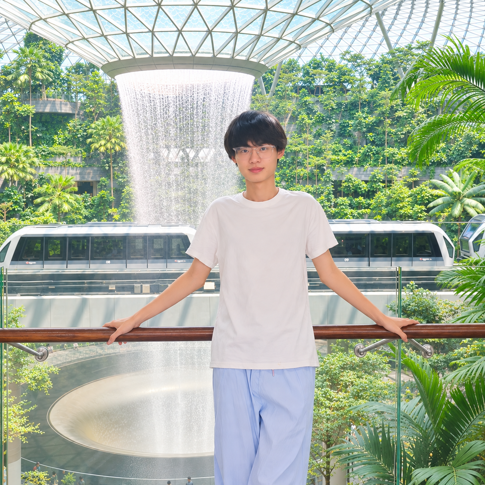

张乐涵 Lehan Zhang
多模态大模型 · 具身智能
Multimodal LLMs · Embodied Intelligence
嗨，我是张乐涵。2026 年毕业于北京服装学院信息管理与信息系统专业，获北京市优秀毕业生称号。 目前正在备考中国科学院大学（UCAS）计算技术研究所人工智能专硕。
Hi, I am Lehan Zhang. I graduated in 2026 from Beijing Institute of Fashion Technology with a B.S. in Information Management & Information Systems, honored as a Beijing Outstanding Graduate. Currently preparing for the M.S. in AI at Institute of Computing Technology, UCAS.
研究方向涵盖多模态大模型与具身智能。我认为具身智能的大脑能力高度依赖多模态大模型， 二者相辅相成。同时通过 ysyx 项目学习处理器设计，探索从底层硬件到上层算法的完整技术栈。
My research spans multimodal LLMs and embodied intelligence. I believe the brain of embodied agents fundamentally relies on multimodal LLMs — the two go hand in hand. I also study processor design through the ysyx project, exploring the full technology stack from hardware to algorithms.

张乐涵 · Lehan Zhang📢 动态
📢 News
📖 教育
📖 Education
🔬 研究方向
🔬 Research Interests
点击卡片展开细分方向
Click a card to expand
多模态大模型
Multimodal LLMs
多模态感知理解、跨模态生成与检索增强。研究如何融合视觉、语言等多种模态信息，构成具身智能的「大脑」基础。
Multimodal perception & understanding, cross-modal generation, and retrieval augmentation. Building the foundational "brain" for embodied intelligence by fusing vision, language, and other modalities.
具身智能
Embodied Intelligence
从芯片设计到系统架构再到算法策略的完整技术栈。以多模态大模型为大脑，驱动机器人感知、决策与行动。
Full technology stack from chip design to system architecture to algorithm strategies. Multimodal LLMs as the brain driving robot perception, planning, and action.
多模态感知
Multimodal Perception
多模态信息理解、视觉 grounding、跨模态检索与对齐。研究如何让模型真正"看懂"并理解多源异构数据。
Multimodal understanding, visual grounding, cross-modal retrieval & alignment. Teaching models to truly "see" and comprehend heterogeneous data.
感知 Perception多模态生成
Multimodal Generation
文生图/文生视频、多模态内容创作、视觉-语言联合生成。探索从理解到创造的跨越。
Text-to-image/video, multimodal content creation, vision-language joint generation. Bridging from understanding to creation.
生成 Generation处理器与芯片架构
Processor & Chip Architecture
面向 AI/机器人负载的处理器设计与 SoC 架构。通过 ysyx 学习 RISC-V 处理器设计。
Processor and SoC design for AI/robotics workloads. Studying RISC-V processor design through ysyx.
芯片 Chip机器人系统与集成
Robotics Systems & Integration
具身智能系统的软硬件协同设计，传感器融合、实时控制、Sim-to-Real 迁移等系统层面的整合。
Hardware-software co-design for embodied systems: sensor fusion, real-time control, Sim-to-Real transfer, and system-level integration.
系统 System世界模型与 VLA
World Models & VLA
世界模型（World Model）构建、视觉-语言-动作（VLA）联合建模与机器人操作策略学习。涵盖环境理解、行为预测到运动规划的完整算法链路。
World model construction, Vision-Language-Action (VLA) joint modeling, and robot manipulation policy learning — a complete algorithmic pipeline from environment understanding to behavior prediction and motion planning.
算法 Algorithm📝 论文
📝 Publications
MRAFnd: Multimodal Retrieval-Augmented Framework for Zero-Shot Fake News Detection
感知Perception提出基于多模态检索增强的零样本假新闻检测框架，无需训练即可跨域识别虚假信息。
A multimodal retrieval-augmented framework for zero-shot fake news detection, enabling cross-domain identification without training.
「前面的区域，我正在探索！」
"The area ahead — I'm exploring it!"
具身智能相关工作推进中，敬请期待。
Embodied intelligence work in progress — stay tuned.
🎨 兴趣爱好
🎨 Hobbies
编程 💻 · 摄影 📷 · 旅行 ✈️ · 原神 🎮
Coding 💻 · Photography 📷 · Travel ✈️ · Genshin Impact 🎮
"Stay hungry, stay foolish."
"Stay hungry, stay foolish."